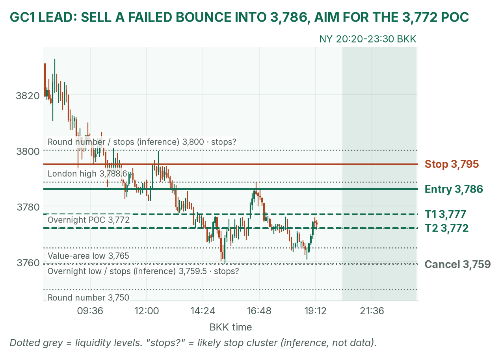
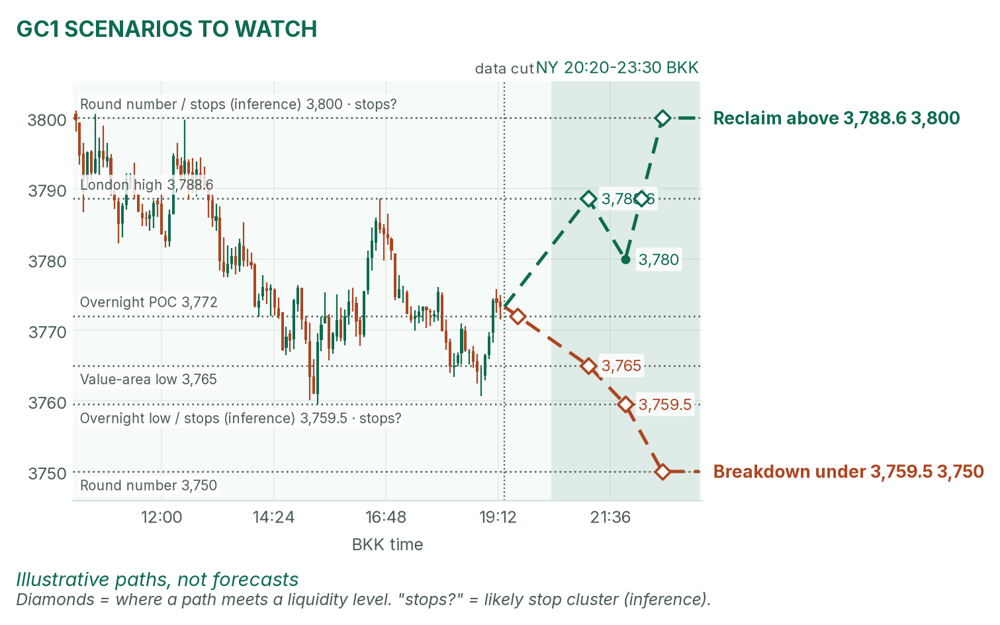
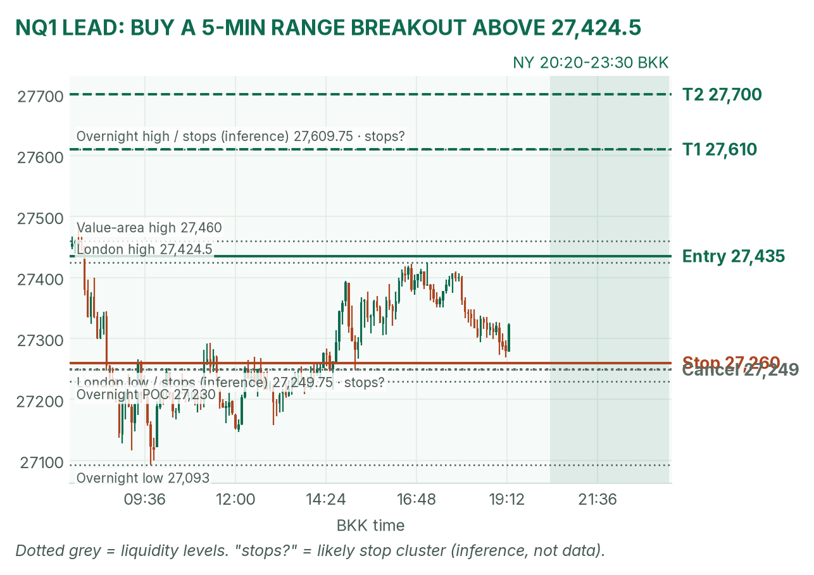
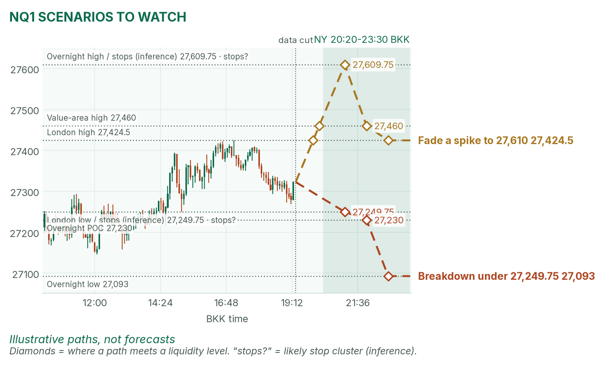

The dollar owns the tape. Sell gold's bounce, buy Nasdaq only on a clean break.
Window 20:20–23:30 BKK (US winter time). Data cut 19:20 BKK: GC 3,773.3, NQ 27,322.75 (Dec contracts, TopstepX, last completed 5-minute bar). Levels only, flat by 23:30. Ideas, not advice. April's pre-NY brief (~18:45 BKK) was read.
Summary
GC: sell a failed bounce into 3,786, stop 3,795, targets 3,777 and 3,772. About 37%. It sides with the strong dollar.
NQ: buy a 5-minute-range break above 27,424.5, entry 27,435, stop 27,260, targets 27,610 and 27,700. About 34%; only after 21:35.
No-trade zones: 20:25–20:32 (housing starts), 21:55–22:02 (pending home sales). The Fed minutes land at 02:00, long after we are flat.
The market story
Gold fell from 3,855.2 at the 06:00 reopen to 3,759.5 in London, its lowest since late September 2025 (April). The dollar index is up at 103.792 and markets lean toward a December Fed hike. Remember the rates lesson: when rates look set to rise, holding gold, which pays no interest, costs more. That is the trend, and I don't fight it.
Nasdaq is the odd one out: up about 1% on Nvidia's beat, with chips bid premarket. But it sits mid-range, between 27,093 and 27,609.75. My bias: gold down, sell bounces. Nasdaq mildly up, but only on proof.
No whisper number found; past move sizes not measured this run. Source: April's brief (Investing.com).
Levels to watch
Level
GC
NQ
Tuesday settle (April)
3,864.2
27,075.50
Tuesday high / low
3,894.0 / 3,839.2
27,498.00 / 26,658.50
Overnight high (since 06:00)
3,859.3
27,609.75
London high / low (since 15:00)
3,788.6 / 3,759.5
27,424.50 / 27,249.75
Overnight POC
3,772
27,230
Overnight value area
3,765–3,837
27,160–27,460
Overnight low
3,759.5
27,093.00
Expected NY range (4-session median)
about 47 points
about 706 points
Gold (GC1)
Bias: down. Gold is sitting on its 3,772 POC (the busiest overnight price). The NY rule fades the 20:20 COMEX opening range back toward the POC, so I want a pop up first, then sell it.
The trade: sell the failed bounce
Entry
Sell 3,784–3,788 (plan 3,786), after 20:32, only if a bounce stalls under the 3,788.6 London high
Stop
3,795, above the London high
Targets
1R partial 3,777 · T2 3,772 (1.56R), the POC
Cancel
A trade below 3,759 before the fill, or no fill by 22:30
Probability
~37%, an estimate. Basis: GC NY opening ranges mostly failed and reverted in my 42-session study (not significant); the trade runs with the trend.
A cold housing print that lifts gold through 3,795 kills the idea. April agrees: hawkish risk "would push the dollar up and gold down further."

GC 5-minute bars into 19:20. A steady slide, with London bounces capped near 3,788.

Illustrative paths, not forecasts.
Scenarios to watch
Bearish breakdown: a 5m close below 3,759.5. Stops likely sit there (inference). Aims for 3,750.
Bullish reclaim: a 5m close above 3,788.6 that holds. Aims for 3,800.
Nasdaq (NQ1)
Bias: mildly up. NQ is inside its 27,160–27,460 value area (where 70% of volume traded). The NY rule: trade breakouts of the 21:30–21:35 range. After about 22:00, stay long only above VWAP (the volume-weighted average price).
The trade: bullish range breakout
Entry
Buy stop 27,435, after 21:35, only if the 21:30–21:35 range high is at or under 27,424.5
Stop
27,260, under the 27,269 last-hour low
Targets
1R partial 27,610 (the overnight high) · T2 27,700 (1.51R)
Cancel
A trade below 27,249.75 before the fill, or no fill by 22:45
Probability
~34%, an estimate. Basis: NQ 5-minute breakouts did best in my study (+0.37R, 31 trades, not significant); T2 sits just past the expected range.
Rising yields could cap tech; a fade back under 27,424.5 is a warning. April partly agrees: she calls Nasdaq mid-range, with ranges likely holding.

NQ 5-minute bars into 19:20. The morning dip to 27,093 was bought; London capped it at 27,424.5.

Illustrative paths, not forecasts.
Scenarios to watch
Bearish breakdown: a 5m close below 27,249.75, then the 27,230 POC. Aims for 27,093.
Mean reversion: a spike into 27,609.75 that fails. Aims back to 27,460.
6E: 1.0979, pinned near its 1.0972 low by the same strong dollar. Context only.
Before you click
ORB bases. GC NY: 20:20 COMEX open until a 2-minute candle's volume drops below half the first two's average, fade to POC. NQ NY: 21:30–21:35 range, trade breakouts. GC and 6E London: 15:00–15:30 range (fade gold, break the euro).
Checklist. 1) Room to today's max loss? 2) Within daily rules? 3) No release within 30 minutes? 4) Agrees with the bias? 5) At a marked level? 6) Setup tagged? 7) Entry, stop, 1R partial, target set? 8) Calm, not chasing?
Reset (60 seconds). Hands off the mouse. Breathe in 4, hold 4, out 6, five times. Name the feeling in one word. "Eager" or "frustrated"? Wait 5 minutes.